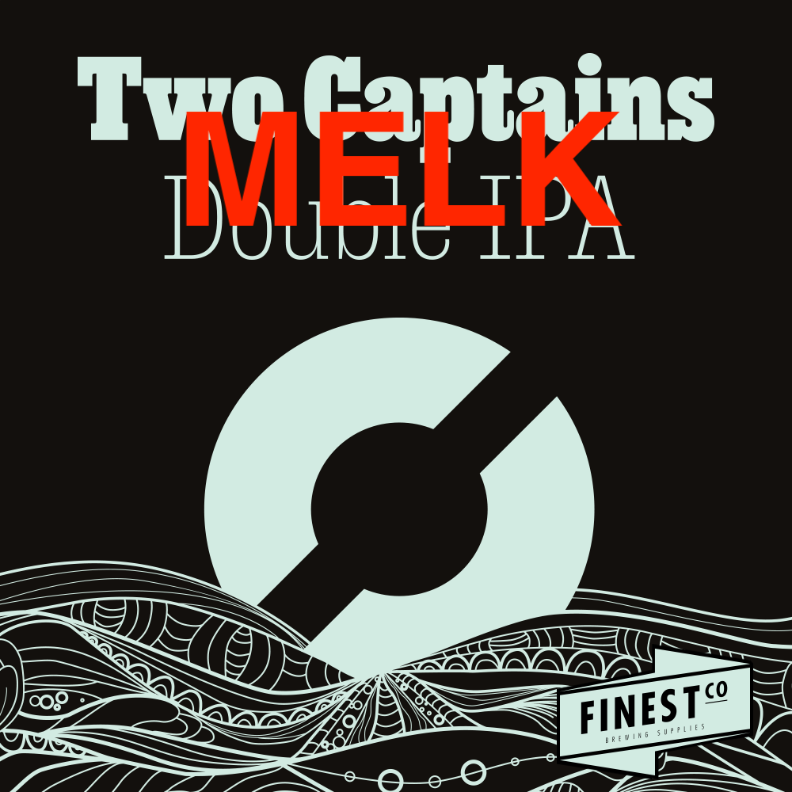

_ _ _______ ________________ _____ .__ __ __________ .___
__| || |_\ _ \ \ _ \______ \ / \ ____ | | | | __ \______ \ ____ ____ __| _/
\ __ / /_\ \/ /_\ \ / / ______ / \ / \_/ __ \| | | |/ / | | _// _ \ / \ / __ |
| || |\ \_/ \ \_/ \/ / /_____/ / Y \ ___/| |_| < | | ( <_> ) | \/ /_/ |
/_ ~~ _\\_____ /\_____ /____/ \____|__ /\___ >____/__|_ \ |______ /\____/|___| /\____ |
|_||_| \/ \/ \/ \/ \/ \/ \/ \/

Blablabla, samme tekst som for #002, men denne
gangen traff jeg langt under OG, og tilsatte derfor
500g laktose da den var klar tilfermentering. FG
ble bittelitt høyere enn #002 (1,010 i stedet for
1,008), men smakstest ved flasking avslører en
søtere øl.
Denne kan hende at er god, eller altfor søt til
å være så alkoholsterk som den faktisk er.
Døm sjæl!
Også; denne er laget først og fremst som en gave ved
min mors bursdag siden hun likte #002 så godt. Bare
synd jeg bommet noe voldsomt på bryggedag, måtte
tilsette melkesukker og at denne smaker noe helt
annet. :D
- - - - - - - - - - - - - - - - - - - - - - - - - - -
ABV: 7,65%
Antall flasker: 44
Bryggmester: Eirik
Bryggedag: 26.07.2021
Flaskedato: 10.08.2021
Drikkeklar: 24.08.2021